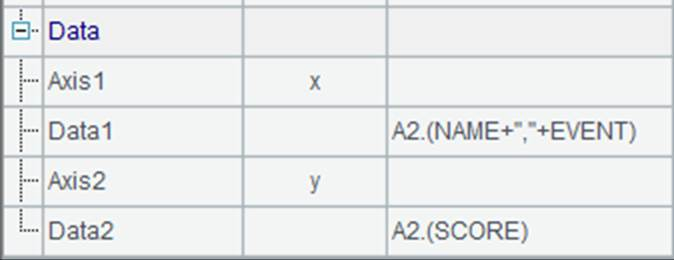
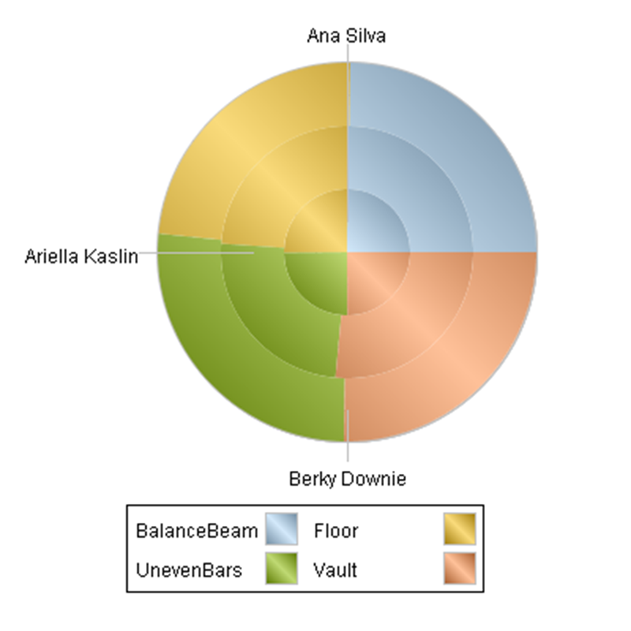
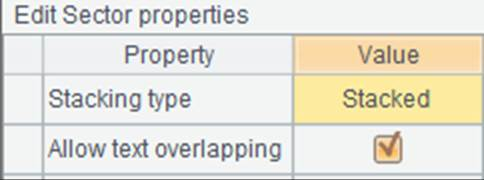

The following ploting algorithm of pie chart for displaying vault results illustrates how to plot a sector element.
|
|
A |
|
1 |
=canvas() |
|
2 |
=demo.query("select * from GYMSCORE where Event = 'Vault'") |
|
3 |
=A1.plot("BackGround") |
|
4 |
=A1.plot("EnumAxis","name":"x","location":3,"polarX":0.55, "allowLabels":false) |
|
5 |
=A1.plot("NumericAxis","name":"y","location":4,"allowLabels":false) |
|
6 |
=A1.plot("Sector","axis1":"x","data1":A2.(NAME),"axis2":"y", "data2":A2.(SCORE),"text":A2.(NAME)) |
|
7 |
=A1.draw@p(400,300) |
A1 creates a canvas. A2 retrieves data for chart plotting:

A3 plots the background. A4 plots an enumeration axis as the polar axis x. A5 plots a numeric axis as the radial axis y. The Allow Labels property of both axes is set specifically as false, so that tick marks will not be plotted on the polar axis in case of causing confusion to the pie chart plotting.
A6 plots the pie chart using the sector element, which is our focus here.
First look at the plotting result of A7:

When plotting a pie chart with the sector element, a sector is plotted based on each group of data. A sector is a circle with its inside diameter being zero. The radial axis is a numeric axis showing scores of the athletes, according to which sectors with different central angels are plotted successively to eventually form a circle. A pie chart is in this sense similar to a stacked column chart discussed in The Column Element. Like a column, one sector can be positioned by only one data point whose angular value will be calculated cumulatively. A6 specifies the data properties of the sector element:

Here the given logical coordinates A2.(NAME) and A2.(SCORE) on both axes are sequences. Different from plotting a column chart, the plotting of a pie chart with single data series will identify the enumeration value on the enumeration axis, i.e. the polar axis, always as 1, which means only one pie will be plotted.